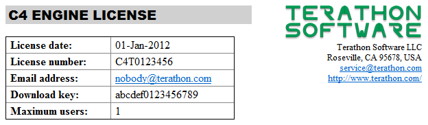
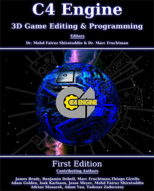

General Information for Licensed Users
From C4 Engine Wiki
This page contains general information about your C4 Engine license and the support provided by both Terathon Software and the C4 community.
Contents |
License Registration

When you obtained your C4 Engine license, an email containing your license registration information was sent to you. This email should be kept in a safe place, and it should not be shared with anyone else. It's a good idea to make a copy of this email store it someplace where it can be recovered in case your hard drive goes up in flames. Please make sure that no one else has access to it, though.
The table at the top of your license email contains your registered address, your license number, and your download key, as shown in Figure 1. Your license number is the one the begins with C4T and looks like this: C4T0123456. Your account is identified by your license number, and we may ask for this number in order to identify you in email communications. The license number does not need to be kept secret.
Your download key is a sequence of letters and numbers that looks like this: abcdef0123456789. It should be kept confidential at all times and never shared with anyone else. We cannot identify your account by the download key, and we will never ask you for it in any communications. Please do not include the download key in any emails that you send to Terathon.
If you are the contact person for the academic edition, do not share your download key with students. Instead, download the engine materials yourself and store them on a secure server under your control. Give students access to that server so they can get the engine materials from you, and remember to remove access for students who have finished your course.
Downloading the Engine
You can download your licensed copy of the C4 Engine by clicking on the My Account link at the top of all the web pages on the C4 Engine website. This link takes you to the following location:
Here, you'll need to enter the email address on your account and your download key. Once you've logged in, you'll see a page with your license registration at the top and a list of downloads that are available to you.
For information about the files you can download, how to install them, and how to build the C4 Engine, see the article Getting Started.
Books about the C4 Engine


There are two books about the C4 Engine currently available, and both are packed with a huge amount of useful information. The first book is about 600 pages long and is entitled The Beginner’s Guide to the C4 Engine. This book is now in its second edition, and it is available in print from Amazon.com at the following address:
Additional information about this book can be found on its wiki page.
The second book is entitled C4 Engine 3D Game Editing & Programming, and it weighs in at over 1000 pages. (This book is not currently available from the publisher. Conversion to a wiki is in progress.)
Support Forums
The C4 Engine has a sizable community of users who frequently communicate on the official forums at the following location.
This is where all licensed users should go for technical support. Terathon Software employees are also on the forums every day to answer questions, but please post all questions or comments pertaining to the use of the engine in the forums instead of sending them private messages. Private messages sent to Terathon Software employees should be reserved for administrative issues or special circumstances.
To post in the forums, you need to register a new username by clicking the Register link in the top-right corner of the main page. We recommend registering with the same email address that is on your C4 Engine license, but this is not a requirement.
Once you've registered a username on the forums, you can join one of the licensed users groups to identify yourself as a licensed user. If you have the Subscription Edition, Standard Edition, or Professional Edition, this also provides you with access to hidden forums that cannot be viewed by unlicensed individuals. You can request membership in a licensed user group by clicking the User Control Panel link near the top of the forum pages, then switching to the Usergroups tab, selecting the group that fits your license type (Standard, Professional, etc.), and finally clicking the Submit button at the bottom of the page. Your request will be reviewed, and your username will change to the color corresponding to the user group when you've been approved.
If the email address you used to register on the forums is different from the email address on your C4 Engine account, then we won't be able to recognize you as a licensed user when you request group membership. In this case, you should still request membership in the appropriate licensed user group and then send an email to service@terathon.com stating that you'd like to join the group. This email should be sent from the email address on your C4 Engine account, and it should contain your name, your license number, and the email address you've used on the forums. Do not send us your download key.
C4 Engine Wiki
The C4 Engine Wiki contains a large number of articles that provide part of the documentation for the C4 Engine. You are reading one of those articles now. Articles are being added and updated by Terathon engineers and community members all the time. The main wiki page can be found at the following location:
If you have a Subscription Edition, Standard Edition, or Professional Edition license, then you can also edit wiki articles or add your own articles. The username and password for accessing the wiki are the same as your username and password for the support forums. You must register on the forums first and join the appropriate licensed users group before you can log into the wiki to make edits. You can log into the wiki once your username on the forums has turned blue or purple (for Standard and Professional Editions, respectively).
API Documentation
The C4 Engine includes thousands of pages of API documentation. (These pages are generated from comments that appear in the header files.) The API documentation for any version of C4 can be downloaded from your account page. The API documentation for the most recent version of C4 is also available on the C4 Engine website at the following location:
Bug Tracker
The C4 Engine website contains a database that is used to track bugs and feature requests. It can be found at the following address:
To submit bug reports or feature requests, you will first need to register an account. The bug tracker does not use the same login information as the forums and wiki, so you will have to register a separate username even if you have already registered on the forums.
If you have found something that appears to be a bug, but you are not sure, please discuss the matter in the Bug Discussion forum before submitting a bug report in the bug tracker. (The Bug Discussion forum is only visible to approved members of the Standard, Professional, and Academic user groups.)
Support Incidents
A support incident is a documented request for paid support that is submitted through your registered account page. Submitting a support incident is necessary when asking for assistance that requires a significant amount of work, so much that it would be an unreasonable amount of effort for the free support provided on the C4 Engine forums. A support incident would be appropriate in cases for which Terathon engineers would need to analyze your code or examine your art resources to determine the source of a problem or suggest methods for optimization.
For more information about support incidents, see the article Support Incidents.